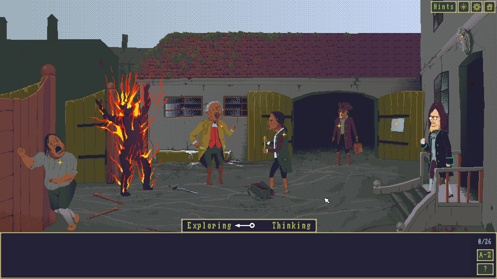
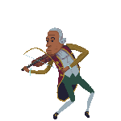

The Case of the Golden Idol
Într-una din diminețile lui decembrie, pe când biroul încă zăcea în amorțeala somnolentă emanată din colegi veniți la lucru, Mihai s-a strecurat tăcut, tiptil, unduindu-se ca trestia în drum spre biroul lui Eric. A văzut lipsa omului căutat și ca să nu-i fie drumul inutil m-a întreținut câteva minute spunându-mi despre apropiat apărutul Pentiment, perorație din care m-am văzut nevoit să-l întrerup pentru a mă scuti de spoilere. A continuat apoi cu un joculeț de care nu aveam habar și a cărui mecanică principală mi l-a entuziasmat fără măsură.
Colegul manifestat așa inopinat în mijirile timpurii ale zilei m-a îmbolnăvit și pe mine cu entuziasmul său debordant și astfel am dat curs recomandării sale expansive, iar pe parcursul unei săptămâni m-am cufundat în întortocheata poveste a Idolului Auriu.
The Case of the Golden Idol e un joc cu o idee cât se poate de simplă care a reușit, în ciuda graficii și coloanei sonore funcționale, să mă acapareze complet. Ideea din spatele lui e în câteva privințe similară cu cea din Return of the Obra Dinn (lucru care explică și lauda lui Lucas Pope care și-a văzut conceptul reprezentat în alt fel) și anume, povestea fiecărui capitol trebuie reconstruită folosind cuvintele culese în cadrele desfășurate dinaintea jucătorului și din contextul general care a facilitat întâmplarea, extrapolat și transformat într-un curs narativ. Altfel spus culegi indicii sub formă de cuvinte și cu drag-and-drop completezi golurile din poveste pentru a-i da coerența adecvată.
Pentru a face asta exită două etape principale în fiecare capitol: cel în care explorezi, culegi informațiile din context și strângi indiciile sub formă de cuvinte și cel în care le pui cap la cap spre a rezolva intriga.Trecerea între aceste stadii se poate face oricând, ori de câte ori este nevoie. Acum trebuie avut în vedere că nu toate indiciile pot avea folosință, o parte din ele fiind de prisos, fără nicio relevanță în scenariu, puse mai degrabă pentru a zădărncii eforturile jucătorului. În absența lor, sunt aproape cert că jocul ar fi devenit prea facil, așa că prezența lor e un fel de compromis, poate un pic leneș, de a complica lucrurile. Înspre ușurarea jocului există în schimb un sistem de highlight a lucrurilor cu care se poate interacționa pentru cei care nu vor să-și bată capul cu vânătoarea lor printre pixeli și binecunoscutul sistem de hint-uri. Ambele sunt complet opționale și se pot activa și dezactiva după pofta inimii.
Povestea urmează parcursul idolului titular prin mâinile unei distribuții de personaje burlești ale căror destine sunt curmate brusc sau iau o turnură contrară celor sperate o dată ce ajung în preajma statuetei. Idolul nu alege, victime fiind și cei ce-i dibuiau întrebuințarea dar și câțiva nevinovați care s-au întâmplat să se găsească în proximitatea lui. Ce e de-a dreptul impresionant e că dezlegarea fiecărui scenariu a avut abilitatea de a mă ține lipit de ecran de la un capăt la altul al său, ceea ce mă face să cred că nu s-a datorat doar nevoii de a atinge o oarecare finalitate (asta în condițiile în care jocul oricum salvează progresul în oricare moment te hotarăști să renunți), ci și datorită ițelor țesute. Eram curios nu doar de dezlegarea enigmei în sine, ci și de modul general în care curgea povestea.
{kind=link}
{kind=link}
Ziceam, poate nedrept mai pe la început, că jocul m-a acaparat complet în ciuda graficii și a coloanei sonore funcționale. Nu e în totalitate adevărat sau mai degrabă, privit de la oarece distanță, The Case of the Golden Idol nu pare să reușească să atragă atenția, dar fiecare personaj are trăsături bine definite, ușor de reținut, lucru datorat în principal reprezentării aproape caricaturale a fiecăruia. Asta țin să cred că valorează foarte mult într-o poveste în care anumite chipuri migrează între capitole, de ele depinzând construirea poveștii de ansamblu. Idolul e până la urmă o statuetă fără voință, un lucru material neanimat care are nevoie de umerii altora pentru a se deplasa și a îndeplini menirea pe care și-o vădeau haraminii.
Așadar, la scurtă vreme după ce e luat la puricat, îți dai seama că The Case of the Golden Idol exudă o personalitate aparte, foarte distinctă din punct de vedere vizual.
Să caut să-i imput ceva anume mi-e destul de greu. În principal din cauză că de singura mare nefericire m-am făcut singur vinovat. Dacă prin unele capitole am trecut ca gâsca prin apă, cele introductive pretându-se pentru așa ceva din cauza complexității relativ reduse, cele către final au necesitat un aport sporit de atenție. Curiozitatea asupra deznodământului m-a împins către exces și ultimele trei capitole au fost jucate în cascadă, lucru care m-a împins înspre greșeală și păcat. În chiar ultimul capitol, n-am înțeles firul cauzalității într-unul din cele trei manuscrise ale scenariului deoarece am confundat o pereche de personaje cu altă pereche și din mănunchiul de indicii rămase n-am putut încropi sub nicio formă fragmentul respectiv al poveștii. A fost singura dată când m-am simțit nevoit să recurg la ajutor. Asta ar trebui privit ca un mic avertisment — forțarea unor aspecte ale jocului poate să ciuntească un pic din întreaga experiență, întinând o măreață aventură cu o mică tevatură. Ar fi preferabilă o distanțare atunci când apare un impediment ce se arată insurmontabil.

Altminteri, tot căutând o obiecție obiectivă, din punctul meu de vedere, doar un mic fragment în capitolul 8(?) mi s-a părut un pic pe lângă subiect, neavând o legătură strictă cu evenimentul principal. Da, avea sens pentru că explica prezența unui personaj într-un anume loc la o anume oră, dar se dovedește că interesele sale n-aveau nicio legătură cu cele făptuite, disculpându-l definitiv. Dar, asta era deja dovedit într-unul din ecranele adiacente în care i se stabilește poziția în relație cu scena principală. În plus logica mi s-a părut puțin inversă, dar înțelegerea pidosnică mi-o pot deasemenea aroga. Se prea poate să nu fi fost suficient de atent și astfel am atribuit, în mod greșit, o acțiune precedentă unui alt personaj. Era oricum aproape fără relevanță în cronologia scenariului respectiv, dar la momentul acela mi-a fost o mică piedică.
Altceva nu cred că mai e de spus în afară de faptul că The Case of the Golden Idol scarpină o mâncărime de care nu aveai habar. E isteț, cu o poveste bine închegată care depășește limitele sale arătate vădit și se continuă într-un substrat între capitole. O să fur ce-a zis Mahdi despre el în cele din urmă: “Mi-a plăcut. Mai vreau.” ■ 
Galerie imagini